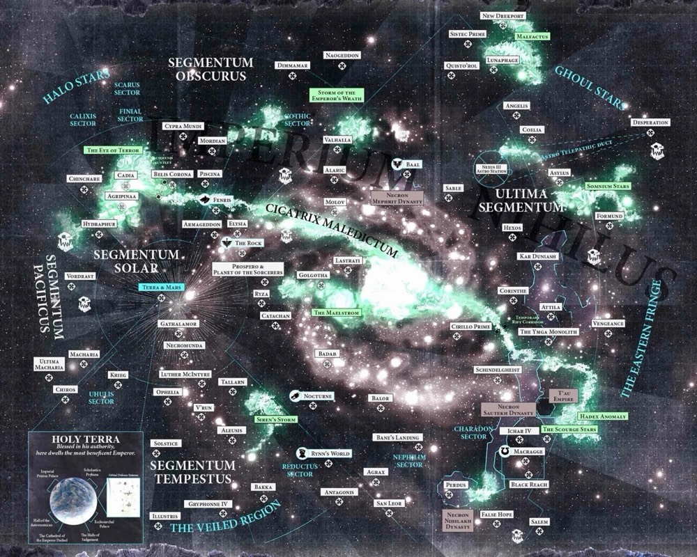

Segmentum
| Segmenta Majoris The five Segmenta of the Imperium | |
|---|---|
 Astra Cartographica chart of the five Segmenta, as drawn before the opening of the Great Rift | |
| Type | Highest territorial division of the Imperium of Mankind |
| Number | Five |
| Formalised | After the Horus Heresy, in the reforms of Roboute Guilliman |
| Subdivisions | Sectors, sub-sectors, systems |
| The Segmenta and their fortresses | |
| Segmentum Solar | Galactic centre; Mars |
| Segmentum Obscurus | Galactic north; Cypra Mundi |
| Ultima Segmentum | Galactic east; Kar Duniash |
| Segmentum Tempestus | Galactic south; Bakka |
| Segmentum Pacificus | Galactic west; Hydraphur |
| Military head | A Lord High Admiral in each Segmentum |
A segmentum (plural segmenta, also written segmentae), formally a Segmentum Majoris, is the largest territorial division of the Imperium of Mankind. Imperial space is divided into five segmenta: the Segmentum Solar at the galactic centre, the Segmentum Obscurus to the galactic north, the Ultima Segmentum to the east, the Segmentum Tempestus to the south and the Segmentum Pacificus to the west. Each is divided in turn into sectors, sub-sectors and star systems.[1]
The segmenta are, above all, military commands. Each is defended by a segmentum fleet of the Imperial Navy, directed from a great naval base called a Segmentum Fortress and commanded by a Lord High Admiral. The fleets are divided into battlefleets, one for each sector or group of sectors. The administrative business of the Imperium, the Administratum's tithe-grades and records, follows the same divisions, though the segmentum itself has no civil government of its own.[1][2]
The opening of the Great Rift at the end of the 41st millennium cut across the segmenta and left large parts of the Segmentum Obscurus and the Ultima Segmentum in the Imperium Nihilus, beyond the reach of Terra. The five-fold division remains the basis of Imperial geography, but it is now overlaid by the distinction between the Imperium Sanctus and the Imperium Nihilus.[3]
History
[edit]Origins
[edit]The Great Crusade had no fixed provinces. Conquered worlds were placed under the authority of the expedition fleet that had taken them, and then of governors appointed by the Council of Terra. As the crusade drew to a close and the number of compliant worlds grew beyond counting, the logisticians of the Imperial Army and the Imperial Administration began to group territory by its distance and direction from Terra. Records of the late 30th millennium already speak of Solar, Obscurus and Ultima as regions of command.[2]
The present system was fixed in the generation after the Horus Heresy. The Heresy had shown the danger of placing great forces under a single commander, and Roboute Guilliman, whose reforms divided the Legions by the Codex Astartes, also divided the Imperial Army into the Astra Militarum and the Imperial Navy. The Navy's strength was spread among five segmentum fleets, each of which answered to Terra through its own Lord High Admiral. No single admiral was to command enough ships to threaten the Throneworld. Imperial historians regard the segmentum as one of the lasting results of that settlement.[4][2]
The Segmentum Fortresses
[edit]Each segmentum was given a fortress world to serve as its seat of command, shipyard, arsenal and final refuge. The Segmentum Fortresses are among the most heavily defended places in the Imperium. Their orbital docks can build and refit capital ships, and their archives hold the records of every battlefleet in the segmentum. The Fortress of the Segmentum Solar is Mars itself, the first of the forge worlds, whose yards have built warships since before the Great Crusade.[1]
The Great Rift
[edit]The Cicatrix Maledictum, the Great Rift, opened at the end of the 41st millennium, after the Fall of Cadia. It ran from the Eye of Terror in the Segmentum Obscurus across the breadth of the galaxy, through the northern Segmentum Solar and into the Ultima Segmentum. Everything to the north of it fell into the Imperium Nihilus, where the light of the Astronomican cannot be seen and astropathic contact with Terra failed. Whole battlefleets were lost to contact, and some segmentum commands have been split between the two halves of the Imperium. Among the first tasks of the Indomitus Crusade was to re-establish the chain of command in each segmentum, and the restored High Lords of Terra have since treated the Rift as a sixth frontier that crosses all five.[3]
Organisation
[edit]Sectors and sub-sectors
[edit]Each segmentum is divided into sectors. A sector's size depends on the density of stars and of Imperial settlement, but a typical sector covers several million cubic light years. Sectors are in turn divided into sub-sectors, which usually consist of between two and eight star systems close enough to one another to be patrolled by a single squadron of Navy ships. Because sub-sectors are drawn around worlds and not around volumes of space, much of every sector lies outside any of them. These gaps are called inter-sectors, or more commonly wilderness space, and may contain uncharted systems, alien worlds, nebulae or nothing at all.[1][2]
Command
[edit]The Lord High Admiral of each segmentum commands its fleet and, in time of war, may direct every Imperial force within its bounds. Beneath him, sector battlefleets are commanded by Lord Admirals and their squadrons by admirals and commodores. The five Lords High Admiral are among the most powerful officers in the Imperium, and one of them has often held the seat of the Lord High Admiral among the High Lords of Terra.[1][2]
Segmentum commands also serve the other great adepta. The Departmento Munitorum keeps a segmentum headquarters at each fortress world, from which the tithe of regiments is allocated, and the Inquisition, the Adeptus Arbites and the Adeptus Astra Telepathica organise much of their work by segmentum. The Deathwatch keeps its watch fortresses on the same divisions.[1]
The five Segmenta
[edit]
Segmentum Solar
The Segmentum Solar lies at the heart of the Imperium and contains Terra and the Sol System. It is the most densely settled of the segmenta and the best defended. Its fortress is Mars, and its fleet, Battlefleet Solar, guards the approaches to the Throneworld. The segmentum includes many of the oldest human worlds and the great hive worlds that supply the tithe of the Imperial Palace, as well as Necromunda. Because it surrounds Terra, its fleet has never been allowed to fall below strength, even in the worst crises of the Imperium.[1]
Segmentum Obscurus
The Segmentum Obscurus lies to the galactic north. It contains the Eye of Terror, the Warp rift in which the Traitor Legions took refuge after the Heresy, and for ten thousand years it was the Imperium's chief line of defence against them. Its Fortress, Cypra Mundi, houses the headquarters of the Segmentum Obscurus Fleet, also called Battlefleet Obscurus, which was the largest and most battle-hardened of the five segmentum fleets.[1][5]
The fleet's sector battlefleets fought most of the Black Crusades of Abaddon the Despoiler. The Cadian Gate, the stable passage out of the Eye, was held by the fortress world of Cadia and by Battlefleet Cadia. In the Gothic War of the 12th Black Crusade, Battlefleet Gothic held the Gothic Sector against Abaddon for more than a decade at great cost.[5] The Fall of Cadia and the opening of the Great Rift tore the segmentum apart. Much of it now lies in the Imperium Nihilus, and Cypra Mundi lies on the edge of the Rift.[3]
Ultima Segmentum
The Ultima Segmentum, sometimes styled the Segmentum Ultima, lies to the galactic east. It is the largest of the segmenta by far and the most thinly settled. Its Fortress is Kar Duniash. The Ultima Segmentum contains Ultramar, the realm of the Ultramarines, and, at its edge, the Eastern Fringe, where the Imperium meets the T'au Empire, the Damocles Gulf and the void from which the Tyranid hive fleets came. It is also where many of the great xenos wars of the late 41st millennium were fought, among them the Battle of Macragge and the wars of Octarius. The northern reaches of the segmentum now lie in the Imperium Nihilus, including the Pariah Nexus and the Chalnath Expanse.[1][3]
Segmentum Tempestus
The Segmentum Tempestus lies to the galactic south. Its Fortress is Bakka, whose shipyards build many of the Navy's capital ships. The segmentum has a reputation for wealth and for the independence, and sometimes the corruption, of its officials. The Bakka Battlefleet has fought long campaigns against pirates, Orks and the raiders of the Drukhari. Lying far from the Great Rift, it has suffered less than the northern segmenta in the Era Indomitus, and it has become one of the chief sources of men and ships for the Indomitus Crusade.[1][3]
Segmentum Pacificus
The Segmentum Pacificus lies to the galactic west, and despite its name it is among the most troubled regions of the Imperium. Its Fortress is Hydraphur. It borders the Halo Stars, whose uncharted worlds are home to aliens and renegades of every kind, and it has been the scene of a long series of rebellions, schisms and wars of faith. The Calixis Sector and the shrine worlds of the western Imperium lie within it, and in the Age of Apostasy the segmentum was among the regions most torn by the wars of Goge Vandire.[1][6]
Table of the Segmenta
[edit]| Segmentum | Position | Fortress | Notable regions |
|---|---|---|---|
| Segmentum Solar | Galactic centre | Mars | Sol System, Necromunda, Armageddon |
| Segmentum Obscurus | Galactic north | Cypra Mundi | Eye of Terror, Cadia, Fenris, the Gothic Sector |
| Ultima Segmentum | Galactic east | Kar Duniash | Ultramar, Baal, the Eastern Fringe, the Damocles Gulf |
| Segmentum Tempestus | Galactic south | Bakka | The southern fringe, Catachan |
| Segmentum Pacificus | Galactic west | Hydraphur | Halo Stars, Calixis Sector |
Records disagree on the placement of some worlds near the borders, and the Astra Cartographica has redrawn several boundaries since the opening of the Great Rift.[a]
See also
[edit]Notes
[edit]- ^ The placement of Armageddon varies between Navy and Munitorum charts. Some Navy records assign it to the Segmentum Obscurus, and the Munitorum to the Segmentum Solar.
References
[edit]- ^ a b c d e f g h i j k Codex Imperialis (rev. 980.M41). Adeptus Terra.
- ^ a b c d e Lexicanum Martialis. Officio Militaris.
- ^ a b c d e Records of the Indomitus Crusade (ongoing). Office of the Lord Commander.
- ^ Guilliman, Roboute (c. 019.M31). Codex Astartes. Macragge.
- ^ a b Annals of Battlefleet Gothic (c. 160.M41). Segmentum Obscurus Command, Cypra Mundi.
- ^ Liber Ecclesiasticus (M37). Adeptus Ministorum.